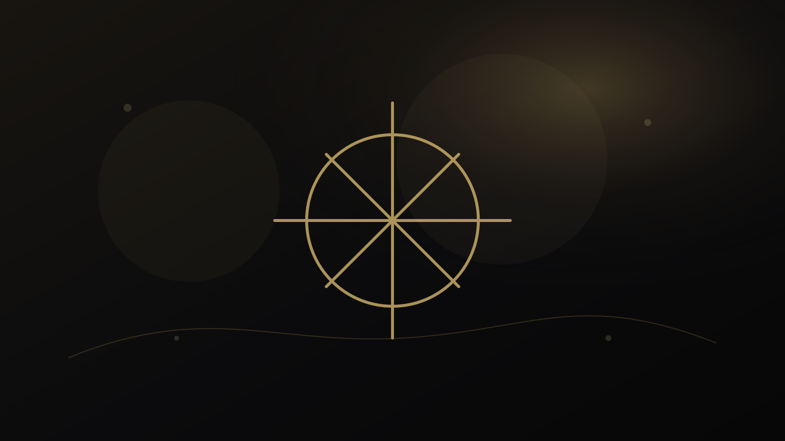
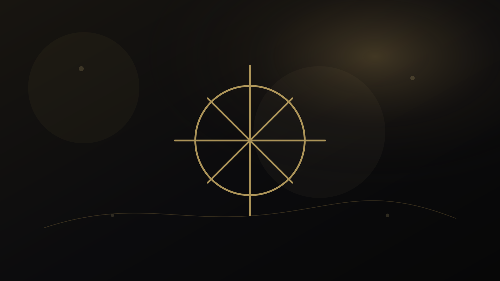
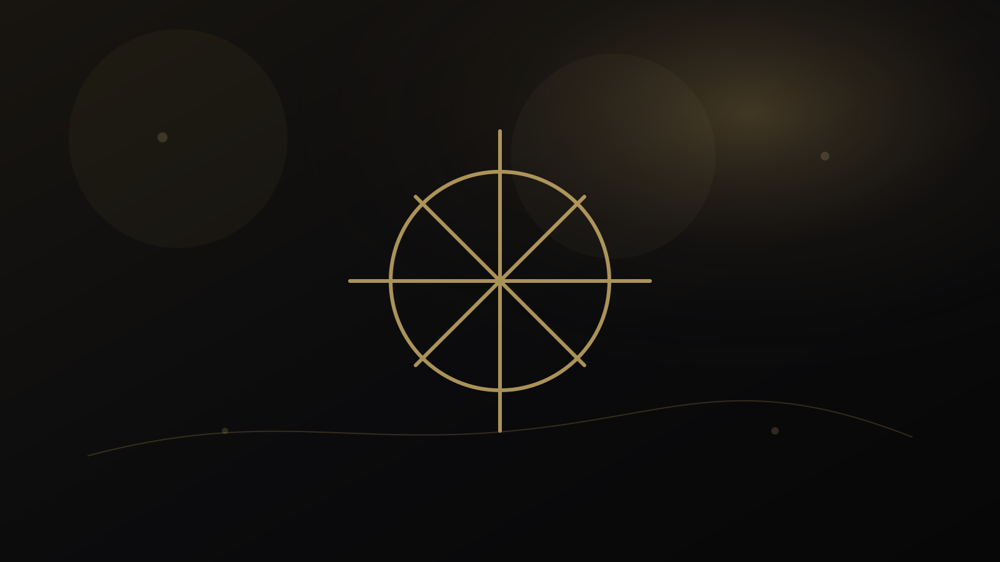

خوشه دانشی
استعداد و انتخاب مسیر
استعدادیابی چندمنبعی، Golden Talent، علاقه، توانایی و تصمیمهای انتخاب مسیر بدون برچسب قطعی.

راهنمای استعداد و مسیر
استعدادیابی تخصصی اولیه؛ از کجا شروع کنیم و چه شواهدی واقعاً لازم است؟
استعدادیابی تخصصی اولیه چگونه انجام میشود؛ چه تفاوتی با یک تست منفرد دارد و چگونه شواهد عملکرد، علاقه، مشاهده و زمینه برای ساخت پروفایل اولیه کنار هم قرار میگیرند.

راهنمای استعداد و مسیر
Golden Talent چیست؟ رویکرد چندمنبعی برای شناخت استعداد و مسیر رشد
Golden Talent چیست و چگونه شواهد چندمنبعی، RCAS، حوزههای رشد و مسیر بازنگریپذیر را برای فهم بهتر استعداد و تصمیم آموزشی کنار هم قرار میدهد.

راهنمای استعداد و مسیر
ارزیابی جامع Golden Talent؛ از شواهد استعداد تا طراحی مسیر رشد
ارزیابی جامع Golden Talent چگونه شواهد فردی، خانوادگی، آموزشی و عملکردی را ترکیب میکند و آنها را به یک مسیر رشد بازنگریپذیر تبدیل میکند.

راهنمای استعداد و مسیر
گزارش استعداد و مسیر رشد؛ خانواده بعد از استعدادیابی چه اطلاعاتی نیاز دارد؟
گزارش استعدادیابی خوب برای خانواده چه دارد؛ شواهد، عدم قطعیت، نقاط قوت، سؤالهای باز، مسیر رشد و زمان بازبینی به جای برچسب و پیشبینی قطعی.

راهنمای استعداد و مسیر
استعداد، علاقه یا بازار کار؛ کدامیک در انتخاب رشته مهمتر است؟
در انتخاب رشته استعداد، علاقه و بازار کار چگونه باید کنار هم قرار گیرند و چرا حذف هرکدام میتواند تصمیم را ناقص کند.